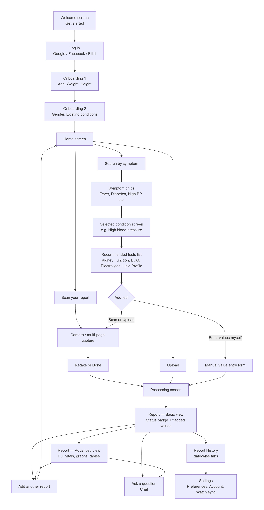

Medrep — Assignment
Figma file
Thank you for shortlisting me for this assignment. It gave me the chance to prove my skills, I have tried to keep the reasoning honest and every design decision grounded in that reasoning.
What I understood
Most people who get a lab report cannot actually read it. The values and terms are written for a doctor, not for the person holding the printout. What stood out to me while looking into this is that people already open ChatGPT or a similar AI tool and paste their report in, just to make sense of it. That told me the need is real and already being solved badly, since a general AI tool was never built to read a medical report carefully or explain it without causing panic. That gap is what this app is meant to close.
What the product does
A person can bring their report in three ways, scan it with the camera, upload multiple files at once, or type the values in by hand when there is no file at all. Whichever way it comes in, it lands on the same explanation on the other side, so the input method never changes what the person gets back.
An AI layer reads the report the way a person would, separates what is normal from what needs a second look, and explains it in plain words instead of a list of numbers. This is the part that replaces the ChatGPT workaround people already rely on, except built specifically to read a medical report and stay careful about what it claims.
The app can also connect to a smartwatch to pull in real time readings such as heart rate, BMI, and ECG patterns. These sit next to the lab report so a person can check what the report says against what their own body is showing day to day, without another app or another device.
Users and their personas
Two personas shaped this design. The first is an older, non-medical adult, comfortable enough with a phone for daily use, but unsure whether a number on a report is something to worry about. The second is a younger, Gen Z user, used to fast and expressive apps, which is part of why the interface leans on bold colour and confident visuals instead of a plain clinical look. I am assuming Gen Z will make up the larger share of early users, and the visual direction follows that assumption on purpose.
In practice, this means someone can open the app, scan a report, and understand what it says in under a minute, without switching to a search engine or a generic AI chat to make sense of it.
High fidelity screens
The two screens chosen for full colour, typography, and component detail — home / scan entry, and the full blood pressure report with result cards.
{kind=link}
{kind=link}
Wireframes
The full wireframe set, covering login through history.
{kind=link}
{kind=link}
{kind=link}
{kind=link}
{kind=link}
{kind=link}
{kind=link}
{kind=link}
{kind=link}
Every report a person adds gets saved automatically, tagged with the date it was read. Opening history shows a simple list, each entry carrying the same short status line the person saw the first time, not the raw report again. Tapping into any past entry opens its full result, so nothing has to be re-scanned to look back at it. Over time, this is also what lets the app show whether a value like cholesterol is moving up, down, or staying the same across visits.
{kind=link}
{kind=link}
User journey
{kind=link}

The journey opens on a welcome screen, then login through Google or Facebook, so returning is a single tap rather than a form. A short onboarding follows right after, asking for age, weight, height, gender, and any existing condition, before the home screen appears. This context is what lets every explanation that comes later be about the actual person instead of a generic average.
Home is built around one clear action, a plus icon that opens three ways to bring in a report. A person can scan it with the camera, search by symptom when they do not have a report yet, or enter the values themselves when there is no file at all. Whichever path is chosen, a short processing screen confirms the report is being read, not stuck.
The result opens on a plain language status first, an evaluation bar that shows where things stand at a glance, before any individual value. Flagged values sit below it as their own cards, while normal ones stay collapsed out of the way, so the one thing that matters is never lost in the rest.
From there, the person can open any flagged value for more detail, or ask a question directly on the same screen if something still is not clear. Someone who started from a symptom instead of a report lands on this same result screen once their values come in, so the ending is always the same no matter where the journey began.
{kind=link}
{kind=link}
Choosing something like high blood pressure shows the tests usually recommended for it, and from there the person can scan, upload, or type in a result such as an ECG by hand. This path exists for someone who only knows what they are feeling, not what to test for.
Every report is saved to a history screen organised by date, with the same short plain language line the person saw the first time. A report is rarely a one time event, so being able to look back and see whether a value has moved matters as much as reading it the first time.
{kind=link}
{kind=link}
{kind=link}
{kind=link}
{kind=link}
Conclusion
The app takes a report in whichever form a person actually has it, reads it the way a person would, and hands back something short enough to act on. Every screen is built to answer one of two questions, what does this mean, and should I be worried, without adding a third question along the way.
I used Claude to cut down on operational work, mainly research, gathering references, and thinking through options quickly, not to design the actual screens. It helped me look at existing tools in this space, work through test panels and medical terminology, and shape the wording on certain screens faster than doing it alone. Every flow, screen decision, and final call in this project is my own.
Thank you again